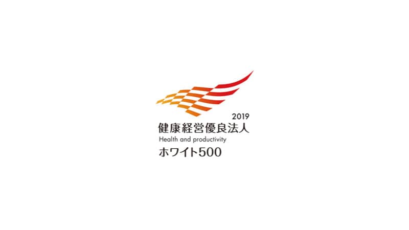

お知らせ
お知らせ
『健康経営優良法人 大規模法人部門(ホワイト500)』に2年連続で認定されました！
2018年2月12日

大旺新洋は平成31年2月21日、経済産業省と日本健康会議が共同で主催する『健康経営優良法人2019』の大規模法人部門(ホワイト500)に認定されました。昨年の『健康経営優良法人2018』に引き続き2年連続での認定となります。
大旺新洋では、「ワークライフバランスのとれた“命”と“健康”を守る会社」という健康経営方針のもと、健康診断の有所見者に対する受診勧奨や長時間労働者に対する医師面談の徹底などを継続するとともに、健康保険組合と連携を深めることで、今後も社員の健康、会社の健康に努めてまいります。
これからも、現在の取り組みを深化させるとともに、保険者との連携を深めることで、社員の健康、会社の健康に努めてまいります。
【健康経営優良法人認定制度について】
地域の健康課題に則した取組みや日本健康会議が進める健康増進の取組みをもとに、特に優良な健康経営を実践している大企業や中小企業の法人を顕彰する制度です。